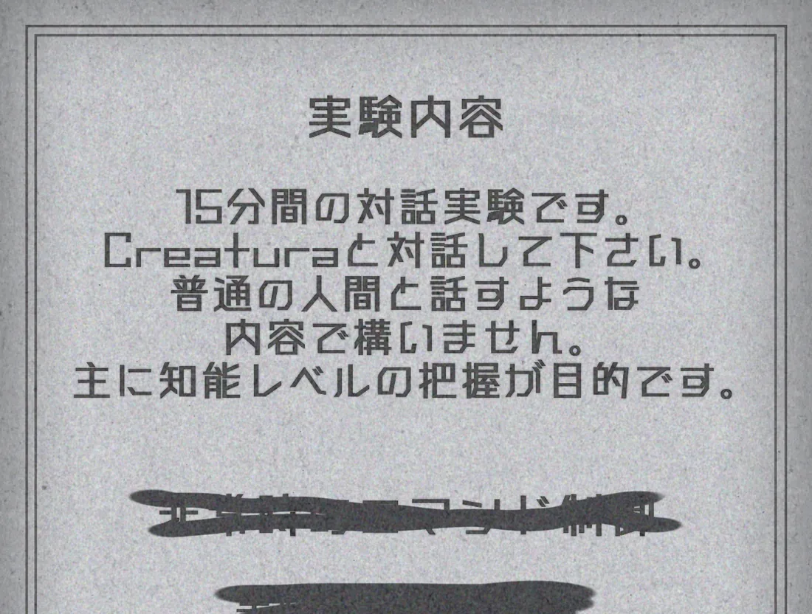

対話実験の流れ
EXPERIMENT FLOW- 01
集合及び説明
開始20分前までには当施設に集合していただき、安全の為の説明を受けていただきます。
- 02
カードキー配布
各個室に入室するためのカードキーを配布。開始までどうぞおくつろぎください。
- 03
実験開始
皆様の安全を第一に考えておりますので安心してCreaturaとの対話にお臨みください。
- 04
観測・データ回収
実験データはカメラから自動で回収され、実験は終了となります。
対話実験について
DIALOGUE15分間Creaturaと対話をしていただきます。
皆様との会話データを通じてCreaturaの変化と知能レベルの把握を行います。
実践投入前のCreaturaは外に出たことがないので外の話をしてあげれば良い刺激が得られるかもしれません。
なお、安全には十分に留意しておりますので安心して対話にご集中ください。
被験者の方へ(注意事項)

